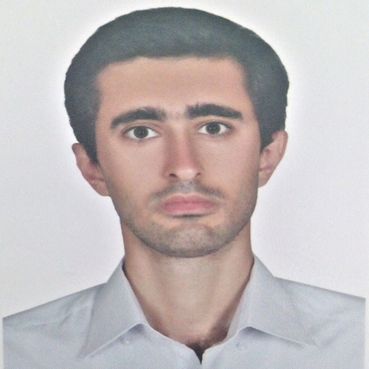

 متولد: 25/9/1372 وضعیت تاهل: مجرد ایران - تهران com.javadabl@gmail.com خلاصه رزومه کارشناسی ارشد رشته مهندسی کامپیوتر، گرایش نرم افزار و دارای مهارت در توسعه اپلیکیشن در پلتفرم اندروید و پشتیبانی نرم افزار علاقه مند به توسعه وب تحت NET Core و مدیریت پایگاه داده. سوابق تحصیلی کارشناسی ارشد مهندسی کامپیوتر گرایش نرم افزار دانشگاه پیام نور استان تهران – مرکز تهران شمال کارشناسی مهندسی کامپیوتر گرایش نرم افزار دانشگاه آزاد اسلامی تهران جنوب سوابق شغلی کارشناس پشتیبانی سیستم در خدمت سربازی آذر 1398 - خرداد1401 پشتیبانی و عیب یابی نرم افزار و سیستم عامل پشتیبانی شبکه پشتیبانی سخت افزار پشتیبانی ICDL تحقیقات پایان نامه کارشناسی ارشد، تحت عنوان: کاهش تهدیدات بدافزارهای اندروید با مدل سازی دامنه ریسک برنامه ها. پروژه کارشناسی طراحی اپلیکیشن فضای مجازی گردشگران تحت سیستم عامل اندروید با xamarin. پروژه ها Dark Gallery Android App مهارت ها و علاقه مندی ها Native Android Programming Java Kotlin Clean Architecture & MVVM .NET Core HTML CSS Bootstrap ICDL SQL Xamarin FL Studio